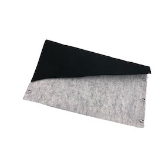

CLUTCH BAG🛍
商品概要
簡単に持ち歩けるクラッチバックのような感じのカバンを作る
作業進捗
材料 - 不織布、グルーガン、ワイヤーひも
時間 - 10分〜15分
黒の大きな不織布を床に置いてサイズが異なるグレー不織布を置いてグルーガンに付ける。
クラッチバッグのようたたんで買物が入るように空間を確保する。
ユニークみよう横にワイヤーひもを切って付けて直線だった部分を斜めに切った。
IMAGE

アドバイス